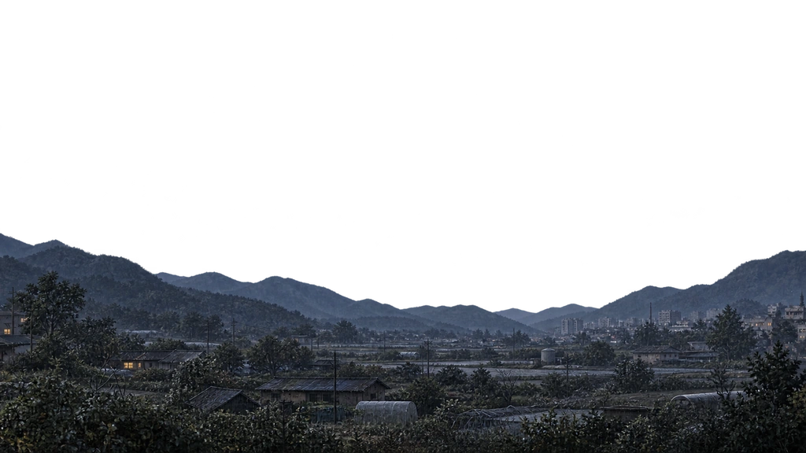
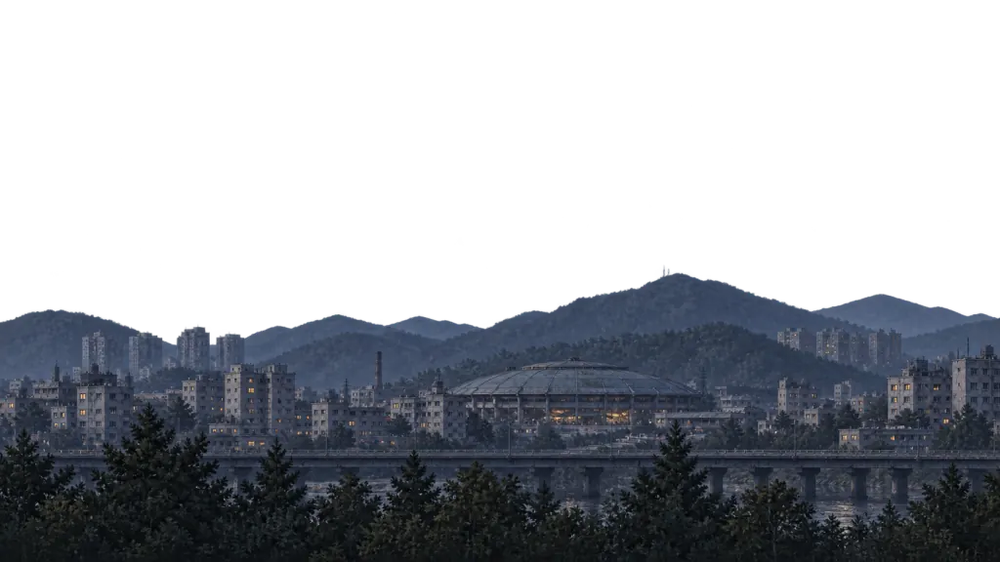

이음새 HD · 한 구간 검토 후보
그림을 늘이지 않고 잇기
밀양·대구 원본은 그대로. 사이 지형을 한 화면당 1024px로 다시 만들었습니다. 세로 조각 변형·거울 반복 없이 같은 기준 높이로 이동합니다.
48초 독립 주행. 재생을 끄면 정지 위치로 돌아갑니다. 왕복은 같은 도시 그림을 반전하지 않고 되짚습니다. 실제 플레이·저장에는 미적용.




접합부 64px는 원본 끝부분을 참조한 짧은 재질 겹침입니다. 하늘·도로·차량은 별도 레이어. 새 그림의 경계색과 능선은 검토 중이며, 이 초안만으로 전체 길의 완성을 주장하지 않습니다.
화질과 남은 검수
이전 연결 띠는 화면 한 장에 약 341px를 썼습니다. 지금은 1024px를 사용해 480px·DPR 2에서도 확대하지 않습니다. 원본 1672×941 → 비례 축소 WebP 1024×576. 샤프닝·블러·세로 늘이기 없음.
도시 두 장의 원본·방향·크기는 보존합니다. 전체 78구간 제작과 실제 게임 감속·사건 정차·새로고침 검수는 별도이며 현재 활성화하지 않습니다.